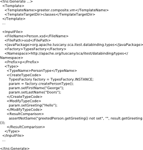
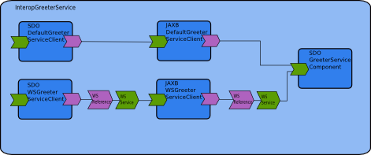

This integration test tests the Tuscany SCA databinding implementation by passing various data structures across various bindings using the supported databindings. There are tests for the individual databindings which exercise various bindings with the same databinding at client and server ends of each binding. There is also an integration test which exercises the transformer chains by specifying different databindings at client and server ends of the binding.
In doing this testing it is apparent that there is a lot of repetition in creating client, services, idl and type for each of the data types for each of the bindings for each of the databindings. To reduce the amount of effort required to maintain the tests as new types, bindings and databindings are added the test cases themselves are generated from configuration files.
To reduce the amount of manual effort involved in building and maintaining tests cases the test cases themselves are generated at run time using a set of velocity templates. Each test module has a generate.xml file in the resources/generate directory which tells the generator what to do. The file looks like this.

Each element describes a velocit template to use in the test. The generator process is to expand
each velocity template provided with all of the types specified in the
Each
Hence the CreateTypeCode, ModifyTypeCode and ResultComparison elements which contain the type specific code that is used in the tests.
The common directory contains the information that is common across all of the tests. This includes the common velocity templates and the source for the generator that reads the config.xml for each test. Common also contains all of the data type schema as these are common across all tests. Each test pom is written so that the contents of the common project are expanded into the tests target directory before the test starts. In this way all of the common elements are available for the test generation phase and at test runtime.
The individual databinding tests, for example, sdogen and jaxbgen, are mostly empty as their content is generated at runtime. The configuration and any test specific templates can be found in the resources/generate directory. Some files are hand crafted for each test and live in their static position in the tests directory structure.
Each test uses the same scenario

The interface exposed by the greeter service provides a greet method for each data type being tested, for example,
PersonType greetPersonType(PersonType param);
AttributeComplexType greetAttributeComplexType(AttributeComplexType param);
AttributeReferenceComplexType greetAttributeReferenceComplexType(AttributeReferenceComplexType param);
These methods are taken from the SDO databinding test and hence PersonType, AttributeComplexType, etc. will have been generated by the SDO static type generator.
Hence this tests a single databinding across a variety of data types and a variety of bindings. New bindings be tested by extending the composite. Be datatypes can be tested by updating the confix.xml file.
This test uses the generated client, services and types from the individual databinding tests. It does not regenerate them and you will see a dependency in the interop test pom on the other databinding tests. Is also has some generate elements because the composite file must currently have import statements for all of the SDO factories required during tested.
The scenario used here is,
A chain of components is built up for each binding. Each component, drawn from the the inidividual databinding tests, tests the full range of datatypes. The client components are designed so that they can be chained together and so tranformations across different databindings is tests. The service component simply changes the data content and returns it as before.
The tests can be built by doing the following.
cd sca/itest/databindings
mvn
The only modification to this process is required if a new input file is added to the tests suite. In this case you will need to edit the config.xml files as appropriate but run mvn twice. This may sound a little odd but currently the sdo test uses its pom file to generate the require SDO types. As the test is self generating the pom file will not be updated to include the new type file until the second time it's run. The aim is at some point to remove this feature from the pom.